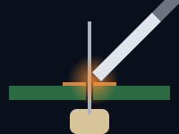
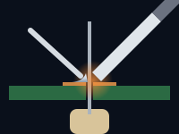
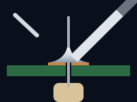
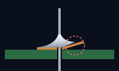

How soldering works
Solder isn't glue. When molten solder touches clean copper that's hot enough, it wets it: it spreads over the surface and bonds with the metal itself, the way water spreads over clean glass but beads up on a greasy one. Which gives the golden rule:
Heat the joint, not the solder.
Both pieces of metal, the pad and the lead, have to reach soldering temperature. Then the solder flows onto them by itself. Melt solder onto a cold part and it just sits on top: a blob that looks connected but isn't.
Get ready
- Clean metal. Old perfboard and component leads tarnish. If the copper looks dull or dark, rub it bright with a fiberglass pen or a pencil eraser, then wipe it with isopropyl alcohol.
- A tinned tip. Wipe the hot tip on brass wool and melt a little solder onto it, so it's bright silver.
- A steady board, held in a vise or PCB holder at a comfortable angle.
- The part in place. Push its leads through the holes and bend them out a little on the copper side, so the part can't drop out when you turn the board over.
A perfect joint in five steps



-
Touch the tip to the pad and the lead
Lay the flat of the tip against both at once, where the lead comes out of the pad, and hold it there for about a second to bring both up to temperature.
-
Feed solder into the joint
Touch the solder wire to the pad and lead on the side opposite the tip, not to the tip itself. If the metal is hot enough, the solder melts at once and flows round the lead.
-
Stop at a little volcano
Feed just enough to cover the pad and climb the lead in a smooth cone: usually a few millimeters of 0.8 mm solder. Then take the solder away.
-
Take the iron away
Solder first, then the iron, a moment later. The whole joint should take two to three seconds.
-
Keep still, then trim
Hold everything still for a couple of seconds while the solder sets. Then snip the lead just above the top of the joint with flush cutters.
Why not melt solder on the tip and dab it on? The flux in the solder burns off the hot tip within a second or two, so by the time the blob reaches the joint there's nothing left to clean the metal, and you get a dull lump sitting on the surface. A tiny bit of solder on the tip is good, though: it helps the heat flow into the joint.
Watch it done. Soldering is easier to see than to read about. The EEVblog through-hole soldering tutorial shows every step up close, on video, and SparkFun's How to Solder: Through-Hole Soldering has photos of each stage.
What a good joint looks like
A good through-hole joint is a smooth, concave cone (people call it a volcano) that:
- covers the whole pad, right to its edges;
- climbs the lead, with the lead's outline still visible under the solder;
- curves inward, meeting the pad and the lead at a shallow angle;
- is smooth and shiny with leaded solder, or smooth and satin-gray with lead-free, which never shines as much;
- has no cracks, holes or lumps, and touches nothing it shouldn't.
The shallow angle where the solder meets the metal is the giveaway: it shows the solder wetted the surface. A blob with a steep edge, like a drop of water on a waxed car, didn't.
The joint doctor: bad joints and how to fix them
Every solderer makes all of these. Recognizing them is the skill, and fixing them is usually just heat, a touch of flux and a few seconds. The pictures are cross-sections through the board, with the copper side up.

Also: trim long leads. Untrimmed leads can bend over and touch their neighbors, and they hide the joint you're trying to inspect.
Which parts first
Solder the lowest parts first and work up to the tallest. When you turn the board over to solder, it then rests on the parts you're soldering and holds them flat against the board.
- Wire links and jumpers that lie flat
- Resistors and diodes
- IC sockets and pin headers
- Small ceramic and film capacitors, transistors
- Electrolytic capacitors, regulators, trimmers
- Connectors, switches, and anything tall or heavy
Tip: solder just one lead of a part first, check that it sits flat and straight, and reheat that joint to nudge it if not. Only then solder the rest. On a socket or header, tack two opposite corner pins first.
Worked example: soldering the 555 blinker
On the 555 blinker from the layout guide, lowest first works out like this. Solder from a print of its solder side, so every joint is where your eyes expect it.
- The red jumper, flat on the component side.
- R1, R2, R3 and D2, lying flat, with D2's band away from the terminal.
- The 8-pin socket, notch at the top, tacked by two opposite corners first. Then the yellow link on the copper side, tacked to the joints of pins 2 and 6.
- C2 and C4, the small ceramic capacitors.
- The LED D1 and the electrolytics C1 and C3, with the LED's flat side and the stripes toward ground.
- The terminal J1, the tallest part.
- The copper side's wiring: the bridges between neighboring pads, then the bare wire, rails first.
Leave the 555 itself out until you've tested the board. The parts list and the rest of the build are on the 555 LED blinker project page.
Soldering wires
- Strip 3 to 5 mm of insulation.
- On stranded wire, twist the strands together tightly so none stray.
- Tin the wire: heat it and let solder soak into it. Tin the pad or terminal the same way.
- Hold the two together and touch the iron to them. The solder on both melts and fuses; add a touch of fresh solder if it needs it.
Tinning both sides first is what makes wire joints quick and clean. For wires leaving the board, slide heat-shrink tubing on before you solder, then shrink it over the joint.
Delicate parts: heat and static
Semiconductors, LEDs and plastic-bodied parts (switches, sockets, connectors) don't like being cooked. Datasheets typically allow only a few seconds at soldering-iron temperatures.
- Be quick: two to three seconds per joint, then move on.
- Spread the heat: on chips and headers, solder pins in a scattered order (1, then 5, then 2…) instead of working along one side.
- Heat-sink the lead: grip a delicate part's lead with pliers or a crocodile clip, between the joint and the body, so the heat goes into the metal instead of the part.
- Socket your chips: solder the socket, then plug the chip in cold.
Static is the other danger. CMOS chips (the 4000 series, many microcontrollers) and MOSFETs can be damaged by a spark too small to feel. Keep them in their foam or tube until you need them, touch something grounded, such as a metal radiator, before you pick one up (or wear an anti-static wrist strap), and don't work on carpet in a wool sweater. A socket helps here too: the chip goes in last.
Desoldering and fixing mistakes
Everyone desolders. Two tools do nearly all of it:
- Desoldering braid (wick): fine copper braid, usually soaked in flux. Lay it on the joint and press the iron on top: the molten solder soaks into the braid. Snip off the used end. Best for clearing bridges and cleaning pads.
- Solder sucker (pump): cock it, melt the joint, put the nozzle right on the molten solder and press the button. Best for emptying a hole so a lead can come out.
Three tricks make it easier:
- Add solder to remove solder. Old joints, and lead-free ones, often melt reluctantly. Melt a little fresh solder, with its fresh flux, into the joint first, and it comes away far more easily.
- Add flux. It's what makes solder flow, off the joint as well as on.
- Don't pull too soon. Pulling a lead before its solder has fully melted rips the pad off. Heat, wait, then pull gently.
A chip soldered in without a socket is the hardest thing to remove. If you can spare the chip, clip each pin at the body and take the pins out one by one.
Practice makes joints
The first twenty joints are the hardest. Before your real project, take a scrap of perfboard and a handful of cheap resistors and solder them in and out again. Try a solder bridge, a length of bus wire and a jumper, and compare each joint with the pictures above. By fifty joints you'll have stopped thinking about it, and the 555 blinker these guides follow makes a satisfying first build.
When you sit down to solder for real, print the bench card: the temperatures, the five steps and the quick fixes, on one page beside the iron.
Frequently asked questions
How long should I hold the soldering iron on a joint?
About two to three seconds in total for an ordinary through-hole joint: a second to heat the pad and lead, then feed solder until it forms a smooth cone. If it takes much longer, the tip is dirty, too small, or not touching both parts.
Why won't the solder stick to the pad?
The pad isn't hot enough or isn't clean. Make sure the tip touches the pad as well as the lead, clean tarnished copper, and add a little flux.
Why does my solder form a ball?
Solder balls up on metal it can't wet: a cold or dirty surface, or solder whose flux has burnt away because it sat on the tip. Heat the pad and lead together and feed fresh solder into the joint.
Do I need extra flux?
Not for ordinary joints with flux-core solder. Extra flux helps a lot when reworking joints, clearing bridges, desoldering and soldering tarnished parts.
Further reading
The sources behind this guide, and good places to go deeper:
- Common soldering problems (Adafruit Guide to Excellent Soldering)
- Soldering tutorial part 2: through-hole (video) (EEVblog)
- How to Solder: Through-Hole Soldering (SparkFun)
- How to solder through-hole parts (Instructables)
- Learning to desolder gracefully (Hackaday)
- Common PCB soldering problems to avoid (Electronic Design)
- Soldering (Wikipedia)
Plan your next board in Perfboard Designer
Free, in your browser, no sign-up: lay out perfboard or stripboard, check every connection, flip to the solder side and print it at true size.